Základní údaje
- Terasa 45 m²
- Garáž 25 m²
- Dispozice
- Rodinné bydlení 5+kk a komerční prostor
- Plocha
- 277 m²
- Stav
- Projekt se stavebním povolením
- Vlastnictví
- Osobní
Prohlédněte si nemovitost
1 / 17
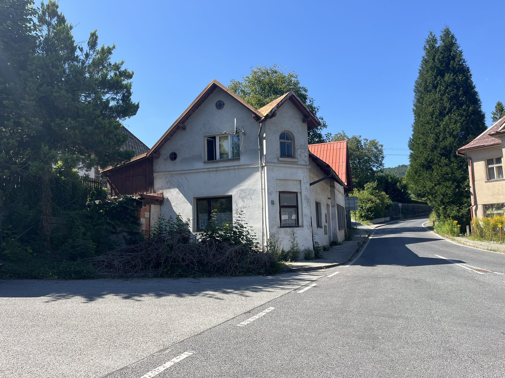
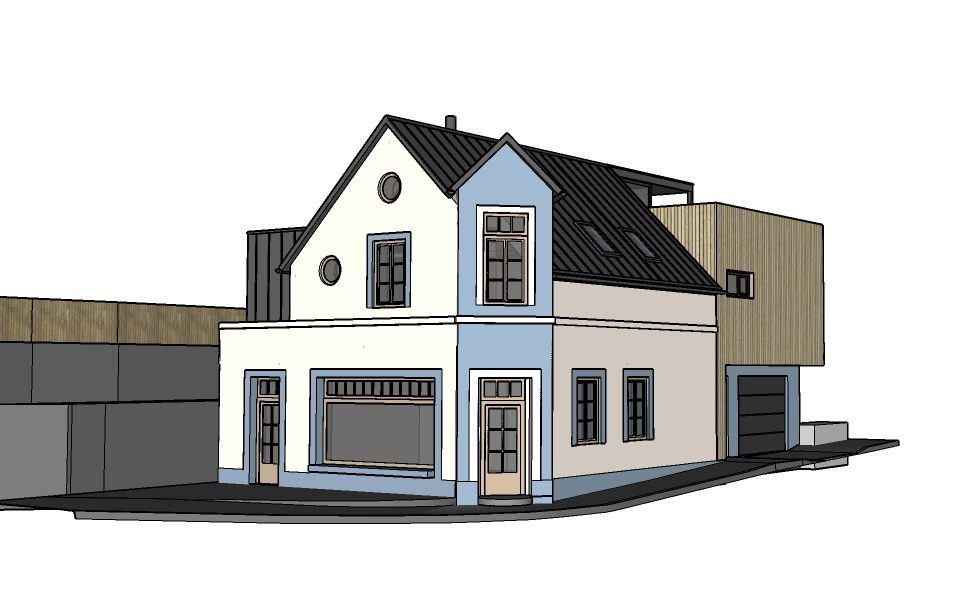
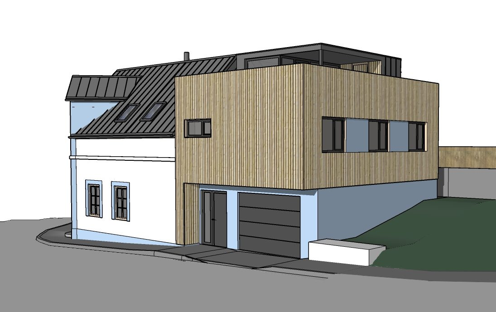
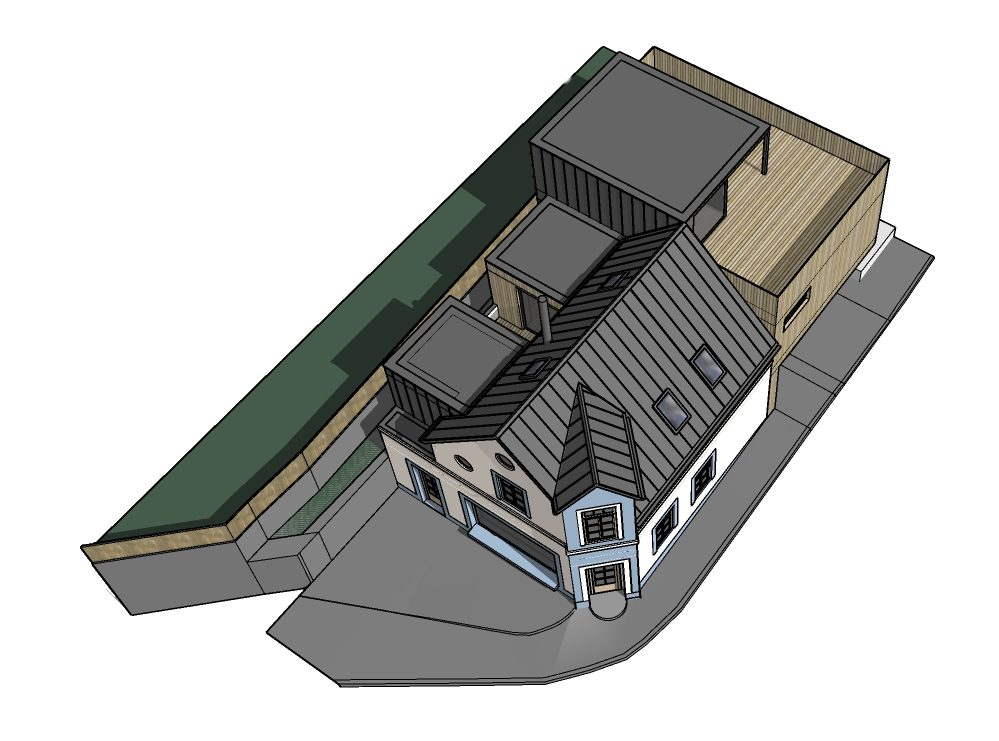
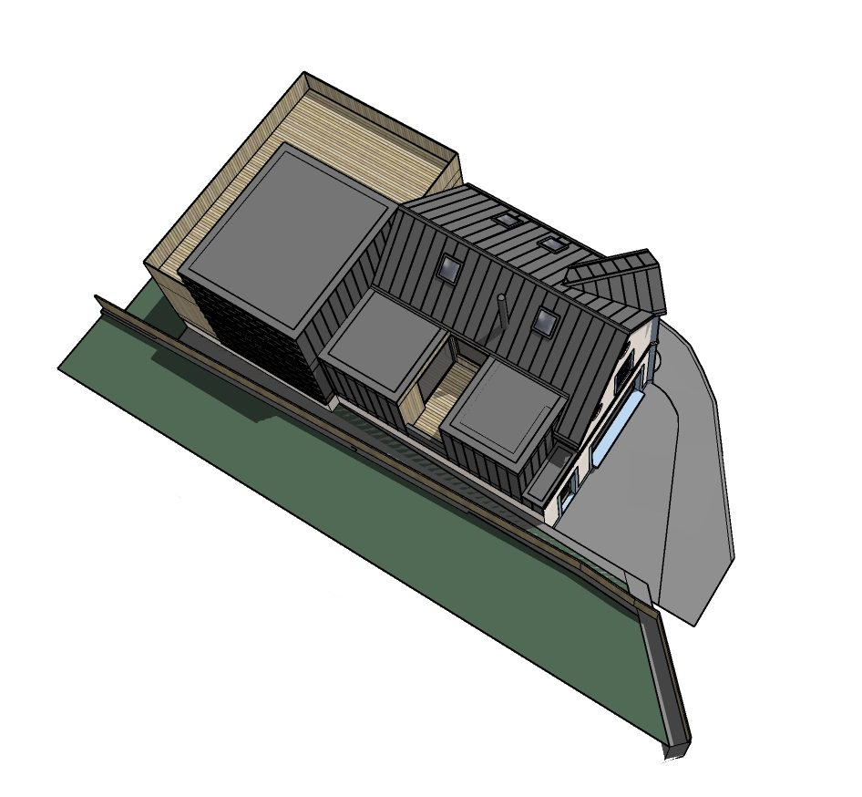
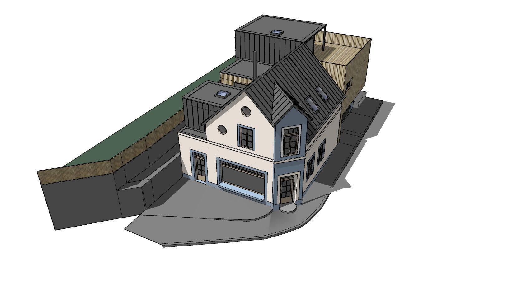
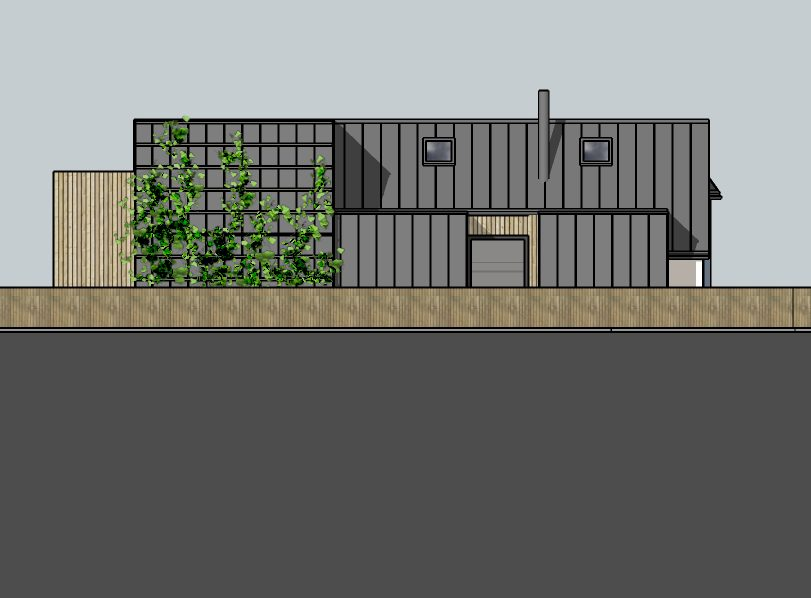
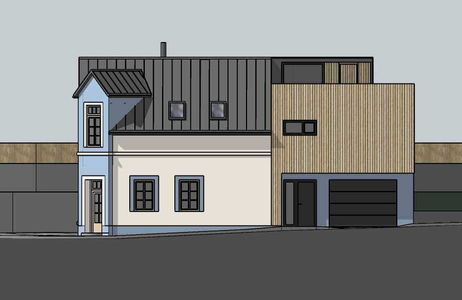
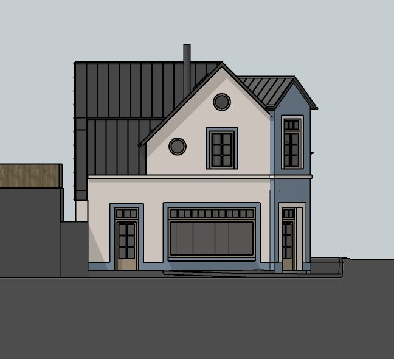
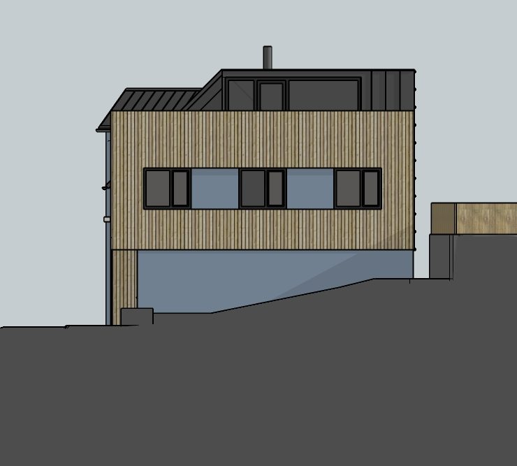
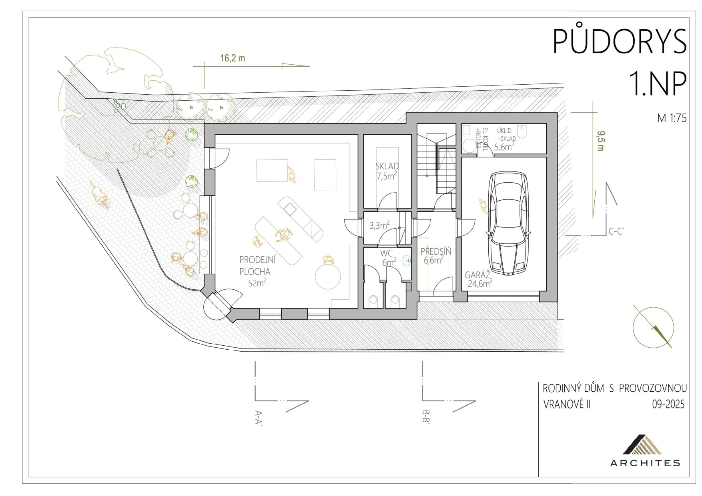
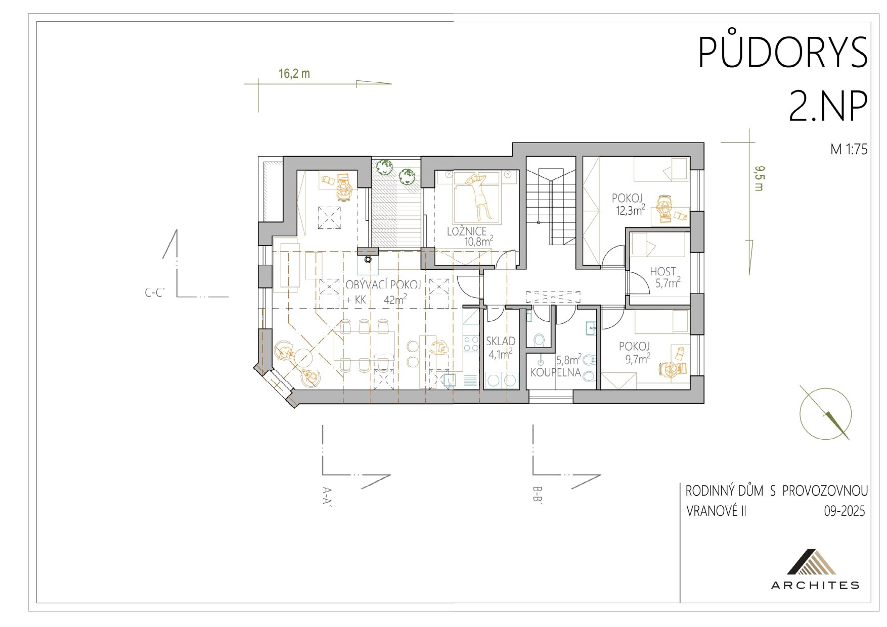
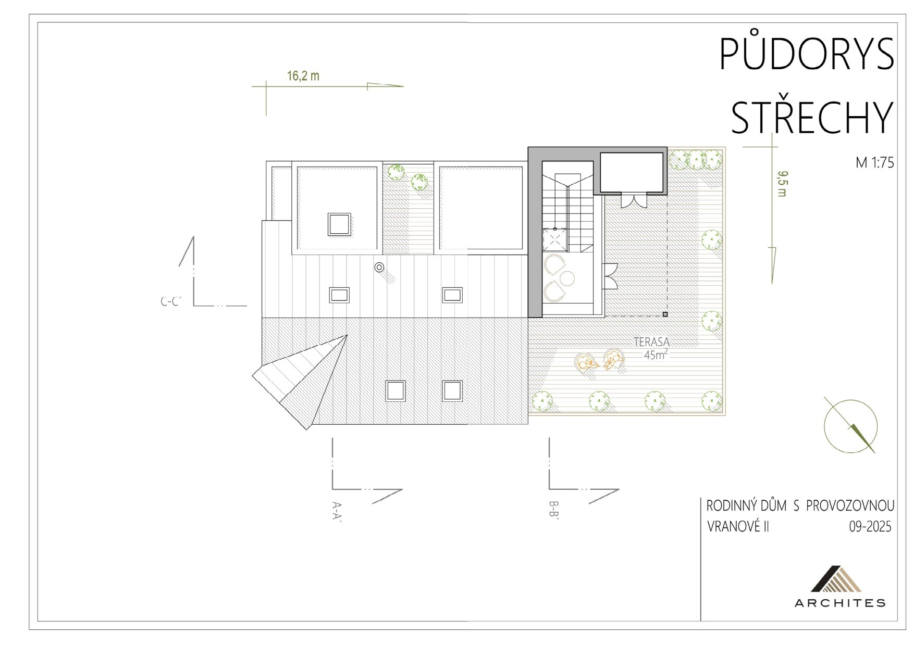
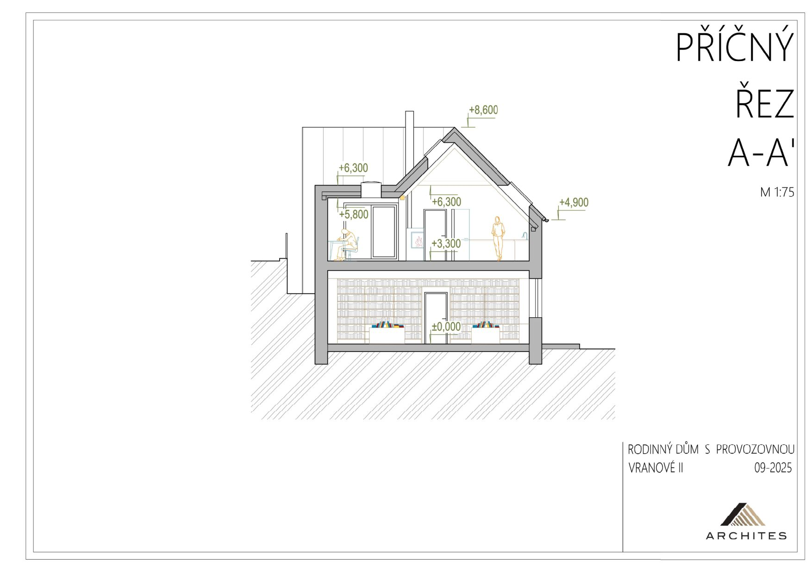
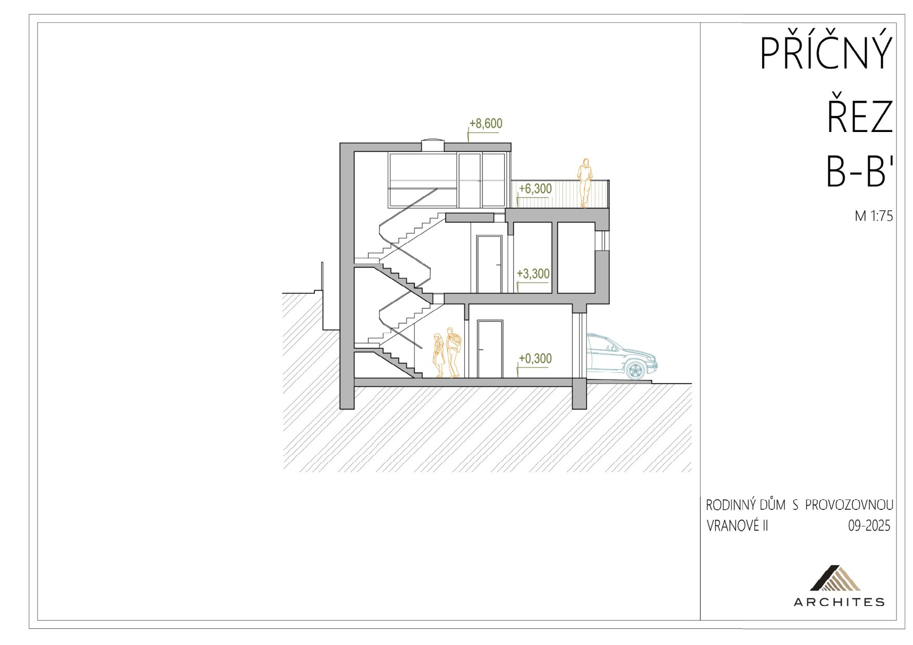
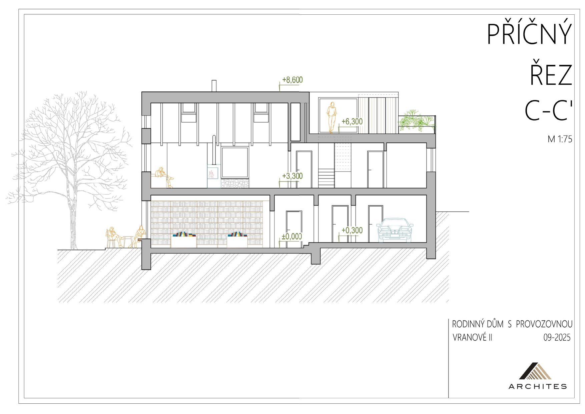
Popis
Výjimečný projekt kompletní přestavby na rodinný dům s provozovnou v samém srdci Malé Skály. Nemovitost stojí na vysoce frekventovaném nároží, v bezprostřední docházkové vzdálenosti od Jizery i skalních vyhlídek.
Projekt má vydané a pravomocné stavební povolení — nekupujete pouhou vizi na papíře, ale připravenou stavbu s vyřešeným, časově i administrativně nejnáročnějším procesem. Můžete začít ihned stavět.
Co projekt nabízí:
Bydlení (162 m²): Velkorysý byt s prosvětleným obývacím prostorem, vlastní garáží (25 m²) a navazující střešní terasou o rozloze dalších 45 m².
Komerční prostor (66 m²): Samostatná přízemní jednotka s bezbariérovým vstupem přímo z nároží, velkou výlohou a venkovní předzahrádkou (ideální pro kavárnu, bistro či prodejnu).
Malá Skála je jedním z nejvyhledávanějších míst Českého ráje. Turistický ruch tu drží poptávku po službách celoročně a nároží u hlavní silnice patří k nejviditelnějším adresám v obci.
Kde nemovitost najdete


Parametry
- Stavební povolení
- Pravomocné
- Celková plocha
- 277 m²
- Plocha bydlení
- 162 m²
- Terasa
- 45 m²
- Garáž
- 25 m²
- Komerční prostor
- 66 m² (kavárna, bistro či prodejna)
- Dispozice
- Rodinné bydlení 5+kk a komerční prostor
- Podlaží
- 3
- Umístění objektu
- centrum obce
- Doprava
- vlak, silnice, autobus
- Lokalita
- Vranové 2. Díl, ev. č. 663, Malá Skála